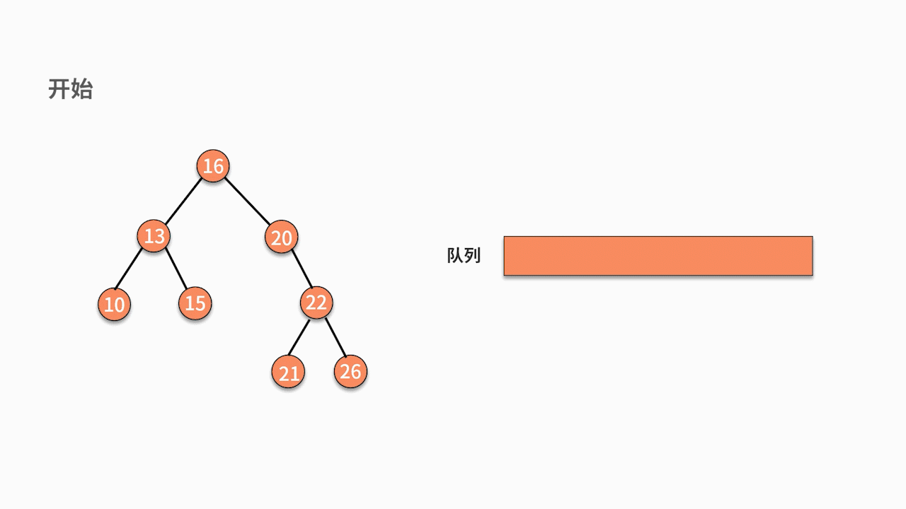

- 00 数据结构与算法，应该这样学！.md.html
- 01 复杂度：如何衡量程序运行的效率？.md.html
- 02 数据结构：将“昂贵”的时间复杂度转换成“廉价”的空间复杂度.md.html
- 03 增删查：掌握数据处理的基本操作,以不变应万变.md.html
- 04 如何完成线性表结构下的增删查？.md.html
- 05 栈：后进先出的线性表，如何实现增删查？.md.html
- 06 队列：先进先出的线性表，如何实现增删查？.md.html
- 07 数组：如何实现基于索引的查找？.md.html
- 08 字符串：如何正确回答面试中高频考察的字符串匹配算法？.md.html
- 09 树和二叉树：分支关系与层次结构下，如何有效实现增删查？.md.html
- 10 哈希表：如何利用好高效率查找的“利器”？.md.html
- 11 递归：如何利用递归求解汉诺塔问题？.md.html
- 12 分治：如何利用分治法完成数据查找？.md.html
- 13 排序：经典排序算法原理解析与优劣对比.md.html
- 14 动态规划：如何通过最优子结构，完成复杂问题求解？.md.html
- 15 定位问题才能更好地解决问题：开发前的复杂度分析与技术选型.md.html
- 16 真题案例（一）：算法思维训练.md.html
- 17 真题案例（二）：数据结构训练.md.html
- 18 真题案例（三）：力扣真题训练.md.html
- 19 真题案例（四）：大厂真题实战演练.md.html
- 20 代码之外，技术面试中你应该具备哪些软素质？.md.html
- 21 面试中如何建立全局观，快速完成优质的手写代码？.md.html
- 加餐 课后练习题详解.md.html
- 捐赠
17 真题案例（二）：数据结构训练
在前面课时中，我们已经学习了解决代码问题的方法论。宏观上，它可以分为以下 4 个步骤：
- 复杂度分析。估算问题中复杂度的上限和下限。
- 定位问题。根据问题类型，确定采用何种算法思维。
- 数据操作分析。根据增、删、查和数据顺序关系去选择合适的数据结构，利用空间换取时间。
- 编码实现。
这套方法论的框架，是解决绝大多数代码问题的基本步骤。其中第 3 步，数据操作分析是数据结构发挥价值的地方。本课时，我们将继续通过经典真题案例进行数据结构训练。
数据结构训练题
例题 1：反转字符串中的单词
【题目】 给定一个字符串，逐个翻转字符串中的每个单词。例如，输入：”This is a good example”，输出：”example good a is This”。如果有多余的空格需要删除。
【解析】 在本课时开头，我们复习了解决代码问题的方法论，下面我们按照解题步骤进行详细分析。
首先分析一下复杂度。这里的动作可以分为拆模块和做翻转两部分。在采用比较暴力的方法时，拆模块使用一个 for 循环，做翻转也使用一个 for 循环。这样双重循环的嵌套，就是 O(n²) 的复杂度。
接下来定位问题。我们可以看到它对数据的顺序非常敏感，敏感点一是每个单词需要保证顺序；敏感点二是所有单词放在一起的顺序需要调整为逆序。我们曾学过的关于数据顺序敏感的结构有队列和栈，也许这些结构可以适用在这个问题中。此处需要逆序，栈是有非常大的可能性被使用到的。
然后我们进行数据操作分析。如果要使用栈的话，从结果出发，就需要按照顺序，把 This、is、a、good、example 分别入栈。要想把它们正确地入栈，就需要根据空格来拆分原始字符串。
因此，经过分析后，这个例子的解法为：用空格把句子分割成单词。如果发现了多余的连续空格，需要做一些删除的额外处理。一边得到单词，一边把单词放入栈中。直到最后，再把单词从栈中倒出来，形成结果字符串。

最后，我们按照上面的思路进行编码开发。代码如下：
public static void main(String[] args) {
String ss = "This is a good example";
System.out.println(reverseWords(ss));
}
private static String reverseWords(String s) {
Stack stack=new Stack();
String temp = "";
for (int i = 0; i < s.length(); i++) {
if (s.charAt(i) != ' ') {
temp += s.charAt(i);
}
else if (temp != ""){
stack.push(temp);
temp = "";
}
else{
continue;
}
}
if (temp != ""){
stack.push(temp);
}
String result = "";
while (!stack.empty()){
result += stack.pop() + " ";
}
return result.substring(0,result.length()-1);
}
下面我们对代码进行解读。 主函数中，第 1～4 行，不用过多赘述。第 7 行定义了一个栈，第 8 行定义了一个缓存字符串的变量。
接着，在第 9～20 行进入 for 循环。对每个字符分别进行如下判断：
- 如果字符不是空格，当前单词还没有结束，则放在 temp 变量后面；
- 如果字符是空格（10～12 行），说明当前单词结束了；
- 如果 temp 变量不为空（13～16 行），则入栈；
- 如果字符是空格，但 temp 变量是空的，就说明虽然单词结束了（17～19 行），但当前并没有得到新的单词。也就是连续出现了多个空格的情况。此时用 continue 语句忽略。
然后，再通过 21～23 行，把最后面的一个单词（它可能没有最后的空格帮助切分）放到栈内。此时所有的单词都完成了入栈。
最后，在 24～28 行，让栈内的字符串先后出栈，并用空格隔离开放在 result 字符串内。最后返回 result 变量。别忘了，最后一次执行 pop 语句时，多给了 result 一个空格，需要将它删除掉。这样就完成了这个问题。
这段代码采用了一层的 for 循环，显然它的时间复杂度是 O(n)。相比较于比较暴力的解法，它之所以降低了时间复杂度，就在于它开辟了栈的存储空间。所以空间复杂度也是 O(n)。
例题 2：树的层序遍历
【题目】 给定一棵树，按照层次顺序遍历并打印这棵树。例如，输入的树为：

则打印 16、13、20、10、15、22、21、26。格外需要注意的是，这并不是前序遍历。
【解析】 如果你一直在学习这门课的话，一定对这道题目似曾相识。它是我们在 09 课时中留下的练习题。同时它也是高频面试题。仔细分析下这个问题，不难发现它是一个关于树的遍历问题。理论上是可以在 O(n) 时间复杂度下完成访问的。
以往我们学过的遍历方式有前序、中序和后序遍历，它们的实现方法都是通过递归。以前序遍历为例，递归可以理解为，先解决根结点，再解决左子树一边的问题，最后解决右子树的问题。这很像是在用深度优先的原则去遍历一棵树。
现在我们的问题要求是按照层次遍历，这就跟上面的深度优先的原则完全不一样了，更像是广度优先。也就是说，从遍历的顺序来看，一会在左子树、一会在右子树，会来回跳转。显然，这是不能用递归来处理的。
那么我们该如何解决呢？
我们从结果来看看这个问题有什么特点。打印的结果是 16、13、20、10、15、22、21、26。
从后往前看，可以发现：打印 21 和 26 之前，会先打印 22。这是一棵树的上下级关系；打印 10 和 15 之前，会先打印 13，这也是一棵树的上下级关系。显然，结果对上下级关系的顺序非常敏感。
接着，我们发现 13 和 10、15 之间的打印关系并不连续，夹杂着右边的结点 20。也就是说，左边的优先级大于右边大于下边。
分析到这里，你应该能找到一些感觉了吧。一个结果序列对顺序敏感，而且没有逆序的操作，满足这些特点的数据结构只有队列。所以我们猜测这个问题的解决方案，极有可能要用到队列。
队列只有入队列和出队列的操作。如果输出结果就是出队列的顺序，那这个顺序必然也是入队列的顺序，原因就在于队列的出入原则是先进先出。而入队列的原则是，上层父节点先进，左孩子再进，右孩子最后进。
因此，这道题目的解决方案就是，根结点入队列，随后循环执行结点出队列并打印结果，左孩子入队列，右孩子入队列。直到队列为空。如下图所示：

这个例子的代码如下：
public static void levelTraverse(Node root) {
LinkedList<Node> queue = new LinkedList<Node>();
Node current = null;
queue.offer(root); // 根结点入队
while (!queue.isEmpty()) {
current = queue.poll(); // 出队队头元素
System.out.print(current.data);
// 左子树不为空，入队
if (current.leftChild != null)
queue.offer(current.leftChild);
// 右子树不为空，入队
if (current.rightChild != null)
queue.offer(current.rightChild);
}
}
下面我们对代码进行解读。在这段代码中，第 2 行首先定义了一个队列 queue，并在第 4 行让根结点入队列，此时队列不为空。
接着进入一个 while 循环进行遍历。当队列不为空的时候，第 6 行首先执行出队列操作，并把结果存在 current 变量中。随后第 7 行打印 current 的数值。如果 current 还有左孩子或右孩子，则分别按顺序执行入队列的操作，这是在第 9～13 行。
经过这段代码，可以完成的是，所有顺序都按照层次顺序入队列，且左孩子优先。这样就得到了按行打印的结果。时间复杂度是 O(n)。空间复杂度由于定义了 queue 变量，因此也是 O(n)。
例题 3：查找数据流中的中位数
【题目】 在一个流式数据中，查找中位数。如果是偶数个，则返回偏左边的那个元素。
例如：
输入 1，服务端收到 1，返回 1。
输入 2，服务端收到 1、2，返回 1。
输入 0，服务端收到 0、1、2，返回 1。
输入 20，服务端收到 0、1、2、20，返回 1。
输入 10，服务端收到 0、1、2、10、20，返回 2。
输入 22，服务端收到 0、1、2、10、20、22，返回 2。
【解析】 这道题目依旧是按照解决代码问题的方法论的步骤进行分析。
先看一下复杂度。显然，这里的问题定位就是个查找问题。对于累积的客户端输入，查找其中位数。中位数的定义是，一组数字按照从小到大排列后，位于中间位置的那个数字。
根据这个定义，最简单粗暴的做法，就是对服务端收到的数据进行排序得到有序数组，再通过 index 直接取出数组的中位数。排序选择快排的时间复杂度是 O(nlogn)。
接下来分析一下这个查找问题。该问题有一个非常重要的特点，我们注意到，上一轮已经得到了有序的数组，那么这一轮该如何巧妙利用呢？
举个例子，如果采用全排序的方法，那么在第 n 次收到用户输入时，则需要对 n 个数字进行排序并输出中位数，此时服务端已经保存了这 n 个数字的有序数组了。而在第 n+1 次收到用户输入时，是不需要对 n+1 个数字整体排序的，仅仅通过插入这个数字到一个有序数组中就可以完成排序。显然，利用这个性质后，时间复杂度可以降低到 O(n)。
接着，我们从数据的操作层面来看，是否仍然有优化的空间。对于这个问题，其目标是输出中位数。只要你能在 n 个数字中，找到比 x 小的 n/2 个数字和比 x 大的 n/2 个数字，那么 x 就是最终需要返回的结果。
基于这个思想，可以动态的维护一个最小的 n/2 个数字的集合，和一个最大的 n/2 个数字的集合。如果数字是奇数个，就我们就在左边最小的 n/2 个数字集合中多存一个元素。
例如，当前服务端收到的数字有 0、1、2、10、20。如果用两个数据结构分别维护 0、1、2 和 10、20，那么当服务端收到 22 时，就可以根据 1、2、10 和 22 的大小关系，判断出中位数到底是多少了。
具体而言，当前的中位数是 2，额外增加一个数字之后，新的中位数只可能发生在 1、2、10 和新增的一个数字之间。不管中位数发生在哪里，都可以通过一些 if-else 语句进行查找，那么时间复杂度就是 O(1)。
虽然这种方法对于查找中位数的时间复杂度降低到了 O(1)，但是它还需要有一些后续的处理，这主要是辅助下一次的请求。
例如，当前用两个数据结构分别维护着 0、1、2 和 10、20，那么新增了 22 之后，这两个数据结构如何更新。这就是原问题最核心的瓶颈了。
从结果来看，如果新增的数字比较小，那么就添加到左边的数据结构，并且把其中最大的 2 新增到右边，以保证二者数量相同。如果新增的数字比较大，那么就放到右边的数据结构，以保证二者数量相同。在这里，可能需要的数据操作包括，查找、中间位置的新增、最后位置的删除。
顺着这个思路继续分析，有序环境中的查找可以采用二分查找，时间复杂度是 O(logn)。最后位置的删除，并不牵涉到数据的挪移，时间复杂度是 O(1)。中间位置的新增就麻烦了，它需要对数据进行挪移，时间复杂度是 O(n)。如果要降低它的复杂度就需要用一些其他手段了。
在这个问题中，有一个非常重要的信息，那就是题目只要中位数，而中位数左边和右边是否有序不重要。于是，我们需要用到这样的数据结构，大顶堆和小顶堆。
- 大顶堆是一棵完全二叉树，它的性质是，父结点的数值比子结点的数值大；
- 小顶堆的性质与此相反，父结点的数值比子结点的数值小。
有了这两个堆之后，我们的操作步骤就是，将中位数左边的数据都保存在大顶堆中，中位数右边的数据都保存在小顶堆中。同时，还要保证两个堆保存的数据个数相等或只差一个。这样，当有了一个新的数据插入时，插入数据的时间复杂度是 O(logn)。而插入后的中位数，肯定在大顶堆的堆顶元素上，因此，找到中位数的时间复杂度就是 O(1)。
我们把这个思路，用代码来实现，则有：
import java.util.PriorityQueue;
import java.util.Comparator;
public class testj {
int count = 0;
static PriorityQueue<Integer> minHeap = new PriorityQueue<>();
static PriorityQueue<Integer> maxHeap = new PriorityQueue<>(new Comparator<Integer>() {
@Override
public int compare(Integer o1, Integer o2) {
return o2.compareTo(o1);
}
});
public void Insert(Integer num) {
if (count % 2 == 0) {
minHeap.offer(num);
maxHeap.offer(minHeap.poll());
} else {
maxHeap.offer(num);
minHeap.offer(maxHeap.poll());
}
count++;
System.out.println(testj.GetMedian());
}
public static int GetMedian() {
return maxHeap.peek();
}
public static void main(String[] args) {
testj t = new testj();
t.Insert(1);
t.Insert(2);
t.Insert(0);
t.Insert(20);
t.Insert(10);
t.Insert(22);
}
}
我们对代码进行解读： 在第 6～12 行，分别定义了最小堆和最大堆。第 5 行的变量，保存的是累积收到的输入个数，可以用来判断奇偶。接着我们看主函数的第 30～38 行。在这里，模拟了流式数据，先后输入了 1、2、0、20、10、22，并调用了 Inset() 函数。
从第 14 行开始，Inset() 函数中，需要判断 count 的奇偶性：如果 count 是偶数，则新的数据需要先加入最小堆，再弹出最小堆的堆顶，最后把弹出的数据加入最大堆。如果 count 是奇数，则新的数据需要先加入最大堆，再弹出最大堆的堆顶，最后把弹出的数据加入最小堆。
执行完后，count 加 1。然后调用 GetMedian() 函数来寻找中位数，GetMedian() 函数通过 27 行直接返回最大堆的对顶，这是因为我们约定中位数在偶数个的时候，选择偏左的元素。
最后，我们给出插入 22 的执行过程，如下图所示：

总结
这一课时主要围绕数据结构展开问题的分析和讨论。对于树的层次遍历，我们再拓展一下。
如果要打印的不是层次，而是蛇形遍历，又该如何实现呢？蛇形遍历就是 s 形遍历，即奇数层从左到右，偶数层从右到左。如果是例题 2 的树，则蛇形遍历的结果就是 16、20、13、10、15、22、26、21。我们就把这个问题当作本课时的练习题。
© 2019 - 2023 Liangliang Lee. Powered by gin and hexo-theme-book.